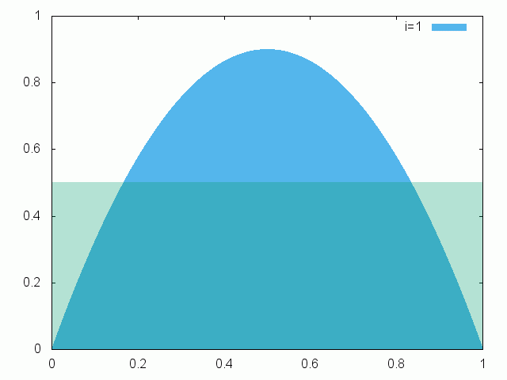
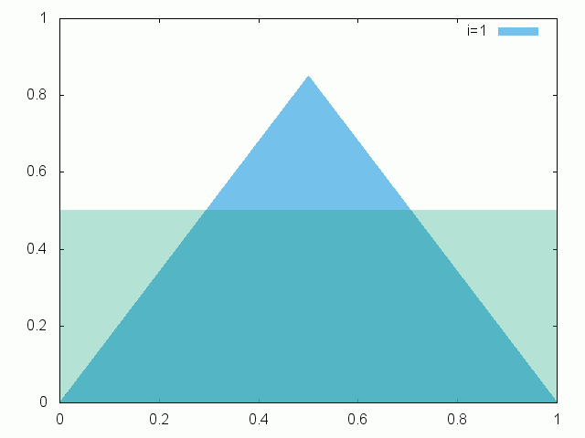
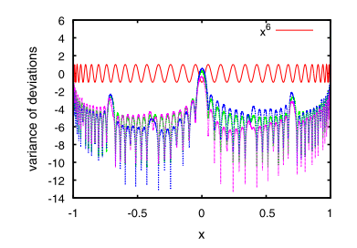
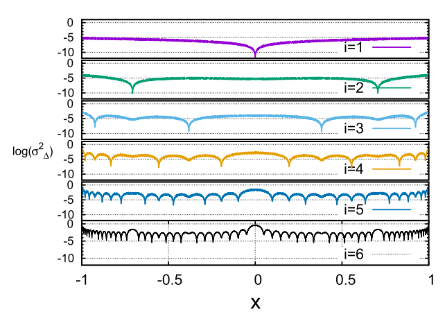
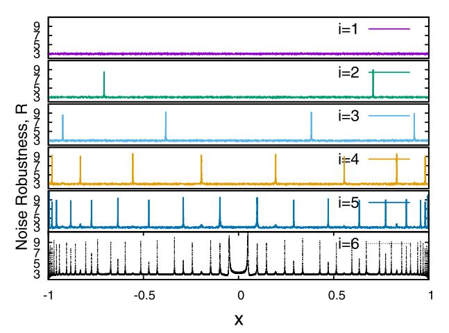
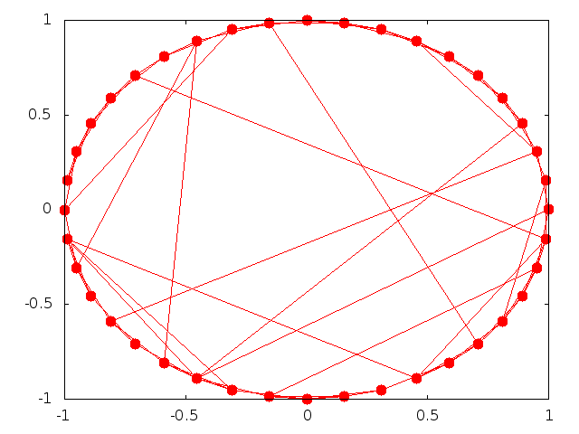
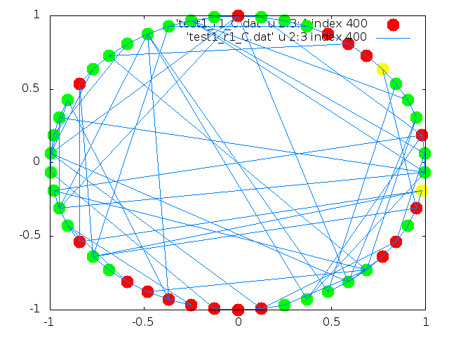
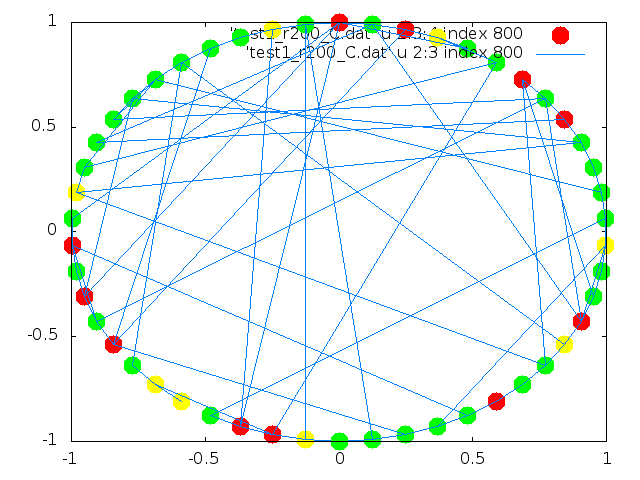
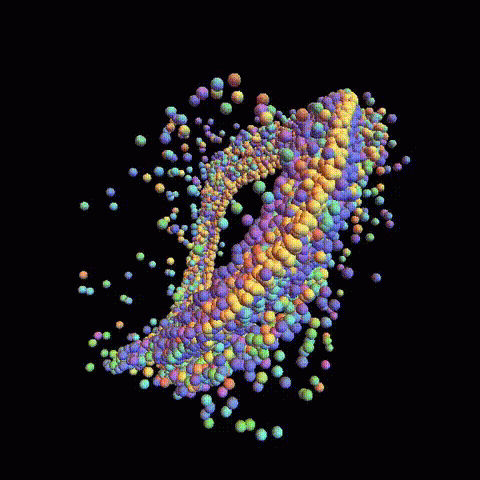

Publications
Full List
Google Scholar
Research
Gene Regulatory Networks
We employ nonlinear time series analysis and machine learning techniques
to generate data driven mechanistic models for complex networks, particularly the
gene regulatory networks using microarray, RNA-seq(bulk/single cell) and ChIP-seq data.
GeneEx (Gene Network Explorer), an interactive webapp to visualize, simulate, and perturb gene
regulatory networks.
Logical Stochastic Resonance
A significant part of my research work is on finding alternative apporaches to implement conventional logic gates by exploiting nonlinearity. One approach known as "Logical Stochastic Resonance" is to
utilize the constructive interplay between noise and nonlinearity to obtain logic and memory for subthreshold signals.
Chaos Computing
Another approach known as "Chaos Computing" is to use the nonlinear systems in chaotic region to implement multi-input single output gates whose functionality can be changed on the fly. Same hardware can be used to generate output corresponding to any of the possible 2d functions. Currently, the Applied Chaos Lab is working with an IC design company, FirstPass Engineering, to commercialize Chaos Computing on a Small Business Technology Transfer (STTR) grant, funded by the Office of Naval Research. To read more about this STTR project and its progress please visit STTR webpage on Applied Chaos Lab website.


Enhancing noise robustness through coupling
Another relevant area of research is developing new ways to enhance the noise robustness of nonlinear systems as they are very sensitive to noise and their performance can deteriorate significantly even under small noise. We have shown that by coupling a number of nonlinear systems, we can superlinear increase in their noise robustness. The method works for additive white Gaussian noise as well as colored noise. Topology of the coupled nodes plays an important role and noise rpbustness for symmetrical topologies can be estimated by the eigenvalues of their Laplacian matrix. For assymetrical networks like a star network, maximum noise robustness can be obtained for the central node despite low connectivity.



Spatiotemporal dynamics in static and time varying complex networks
Nonlinearities in complex systems result in many counterintuitive phenomenon like satiotemporal chaos and synchronization. Many natural systems fall in category of nonlinear dynamical systems and understanding of these systems help us explain the underlying mechanisms of epidemics, opinion formation, traffic jams, turbulence etc. We study how patterns emerge in natural and engineered systems.





Nonlinear analysis of variable stars
The quest for habitable planets has dramatically improved our understanding of variable stars. Recent high resolution photometry of variable stars has shown that their dynamics is quite complex and studies have reported simultaneous excitation of different radial and nonradial modes, period doubling and quasiperiodicity leading to strange nonchaotic dynamics. Despite these advances, a concrete understanding of their dynamics and Blazhko effect still eludes us. We utilize the publicly available data from Kepler, OGLE, CoRoT and other surveys for nonlinear time series analysis and phenomenological modeling of variable stars, including the search for strange (fractal) or chaotic dynamics. For more details on Strange Nonchaotic stars please see here

Image Credits: Prof. John Lindner